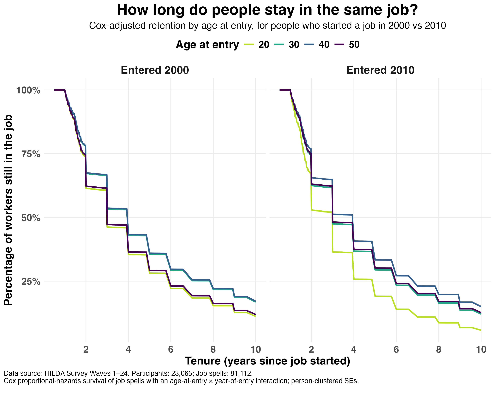

I've seen (and contributed to) a lot of discussion about job-hopping lately, looking at whether it pays to switch jobs and how different types of job changes, moves between industries, and bigger career transitions affect wellbeing. And there seems to be this sense that job-hopping is becoming more common. But what does the data actually say about how long people stay in the same job, and whether that's changed over time?
To find out, I used data from the HILDA survey, which has tracked tens of thousands of people working in Australia for the past two and a half decades. I ran a survival analysis looking at the rate people leave their jobs as a function of the year they started and how old they were when they started.
The results are in the figure below. The main findings:

1) A decade in the same job is rare. On average, only about 24% of people were still in the same job after five years, and less than 10% were still there after ten years.
2) This trend has shifted for some groups. Among people who started a new job at 20 in 2000, 28% were still in it after five years and 11% after ten. For 20-year-olds starting new jobs in 2010, that fell to 19% after five years and under 6% after ten. The share of young workers lasting more than a decade roughly halved.
3) Not every age group has changed. The gap between the 2000 and 2010 cohorts shrank steadily with age at entry. It was smaller for people who started at 30 (29% of those starting in 2010 still there after five years, vs 36% among those starting in 2000), smaller still at 40 (33% vs 36%), and virtually gone by 50 (30% vs 29%).
4) It's not as simple as "older people stay longer." Retention actually peaks in the middle. The workers who last longest are those who start a job in their 30s and early 40s. People who start at 50 leave sooner, in many cases due to retirement.
The obvious follow-up question is “have these trends continued?” Early signs suggest that it’s possible. For 20-year-olds who started a job in 2020, just 9% are projected to still be there after five years, less than half the 2010 figure. But I deliberately left this cohort out of the figure, and I'd treat it with caution. These workers started jobs right as COVID upended the labour market, which makes retention from this period hard to interpret.
So what does this mean for organisations? There’s an argument for doubling down on retention efforts by investing in selecting the right people, and building jobs and a culture people don't want to leave. But the other half of the story is that rising early-career mobility may be a structural shift that has less to do with the employer. For younger hires especially, it might be worth planning for shorter tenures instead of fighting them.